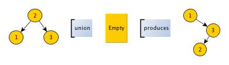
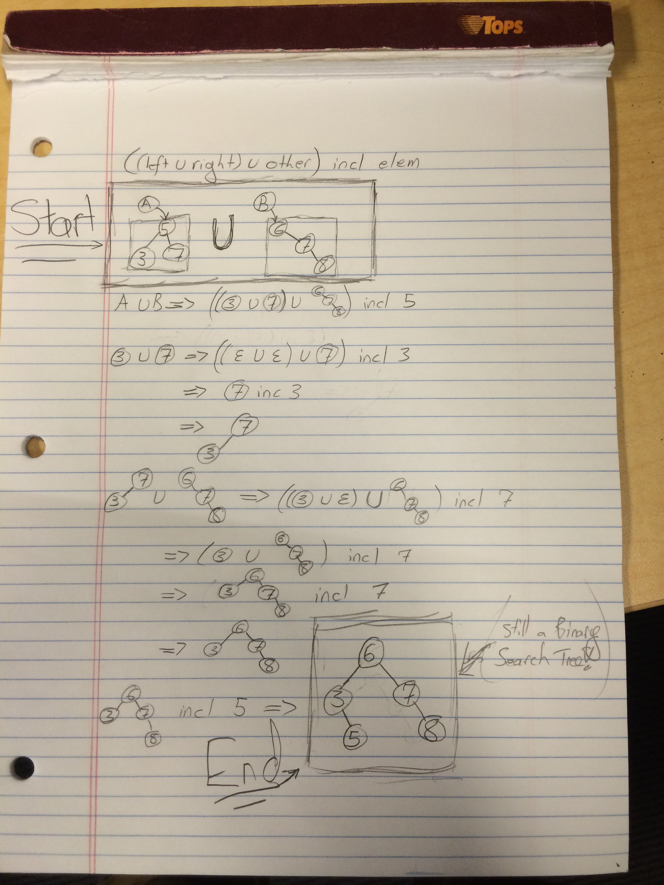

I’m in the 3rd week of Functional Programming Principles in Scala course on Coursera, taught by Martin Odersky, the creator of Scala. The class has been surprisingly awesome so far, but one thing above all struck me as impossible: the “functional” implementation of the union of two immutable binary search trees.
1
| |
WWWHHAATTT??
After an intensive investigation, I eventually determined that this operation
performs what I’m calling a ‘post-order insertion’ of the elements of this
(non-empty) IntSet into other.
Ok, you need some context. Odersky defines our IntSet binary search tree as follows:
Setup
1 2 3 4 5 6 7 8 9 10 11 12 13 14 15 16 17 18 19 20 21 22 23 24 25 26 | |
The only thing that’s non-obvious is the union method I mentioned above. The reader should make sure she understands the other methods before continuing.
At first I wondered, “What sort of tree is produced by the union of two
IntSet?” Given fact that the contains method relies on the tree being a
Binary Search Tree, I wondered how this method could possibly retain the
sortedness. The short answer is that each element of this is passed through incl to be inserted into other. In the process, I noticed a number of properties of this operation.
The best explanation I’ve got
Some preliminary properties of (A union B)
By post-order insertion, I mean we do a post-order traversal
of A, inserting each element into B.
First of all, let “int_set” be an arbitrary IntSet.
Prop 1.a:
(Empty union int_set) == int_set
This is simply the definition of union on Empty.
Prop 1.b:
(int_set union Empty) does not neccessarily == int_set
Counterexample: the IntSet produced by
1
| |

Prop 2:
Inserting nodes from left into right with the incl method will produce a tree where every element of left is hanging off the left edge of the leftmost element of right.
We know every element of right is greater than every element of left.
Therefore each element being added to right from left will travel strictly
leftwards through the right tree before being deposited.
Prop 3:
other is left fully intact in the returned IntSet
Recall that other is the IntSet operand on the right side of the union operator.
This is explained below.
Watch the operation unfold (this is the meat)
Let’s think of the union operator in terms of how it get’s rewritten.
- a U b
- ((a.left U a.right) U b) incl a.elem, a substitution of the formula
- (a1 U b) incl a.head, a rewrite, letting a.left U a.right := a1
- (((a1.left U a1.right) U b) incl a1.elem) incl a.elem, by substituting the formula
- ((a2 U b) incl a1.elem) incl a.elem, letting a1.left U a1.right := a2
- repeat as necessary
So from these few steps we can already see quite a few important things:
- We keep removing one element from
IntSet a, and prepending it to a list of singleelemtoinclintoIntSet b. - So now it is clear that what this function does, is one-by-one
inclelemofthisintoother. This gives us Prop 3 above.
What remains to be determined is the order in which these incl occur.
- a.elem will be the last element included
- a1.elem will be the second to last element included
- By Prop 3 which was demonstrated just a minute ago, a1.elem is the root node of a.right
- Now the post-order algorithm goes left, right, root; and we’ve got ???, right, root.
- Instead of spending forever demonstrating why ??? shall be filled in with left, I’ll simply point out that:
- In our counterexample demonstration of Prop 1.b above, the root follows the right follows the left.
- There’s simply no other element to choose from in a
NonEmptyIntSet.
Short example of union in action

Perhaps the notation of this example is a bit hard to parse. Well ain’t it darn fortuitous that I’m here to explain it.
At the very top we have a restatement of the formula to be applied upon taking the union of two
IntSet.Next we have the two
IntSetwe’d like to find the union of, namedAandB.Areferences a 3-element Binary Tree containing (3, 5, 7), andBreferences a Tree containing (6, 7, 8).Next we substitute
A U Binto the equation at the top to give us a problem of reduction with three components. If we were to define the operators to associate to the left we could remove the parentheses, but I don’t know if that’s legal, in Scala or in Math.By following the order of operations, we first determine the result of the inner-most parentheses, and proceed outwards, which leaves us the desired result.